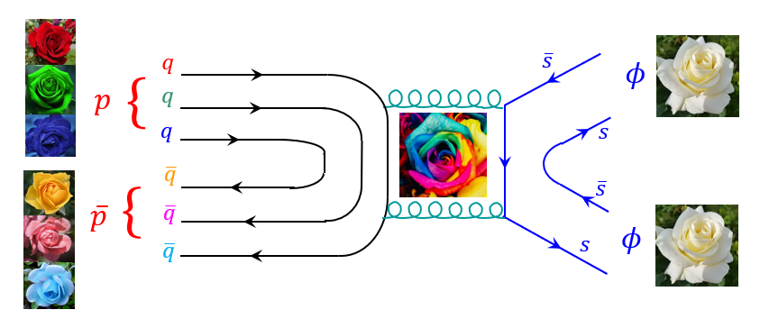

Physics Motivation
In particle physics, the 'Okubo-Zweig-Iizuka (OZI) rule' is a strong phenomenological rule stating that processes described by disconnected quark lines (where initial quarks annihilate and completely new ones are created from gluons) are heavily suppressed. For example, producing two φ mesons (ss̄) from a proton-antiproton collision involves creating completely new strange quarks and should be extremely rare. However, past experiments (like JETSET) found that the cross section for the p̄p → φφ reaction near the production threshold is two orders of magnitude (100 times) higher than the OZI rule predicts. Why does this massive violation occur? One fascinating hypothesis is the intermediate formation of a 'glueball'—a theoretical particle made entirely of gluons with no quarks—which strongly couples to strange quarks. Investigating this anomaly touches upon one of the most fundamental, yet unproven, predictions of QCD.

Diagram of double-φ production in a proton-antiproton collision.
The Experiment
We will explore the totally uncharted center-of-mass energy region near the threshold (from threshold up to 1.1 GeV/c) for the p̄p → φφ reaction using the K1.8BR beamline and HypTPC at J-PARC. The large acceptance of HypTPC makes it uniquely capable of capturing these rare double-strangeness production events with high efficiency. By measuring polarization observables like spin density matrix elements, we will uncover the precise mechanism behind this massive OZI violation.